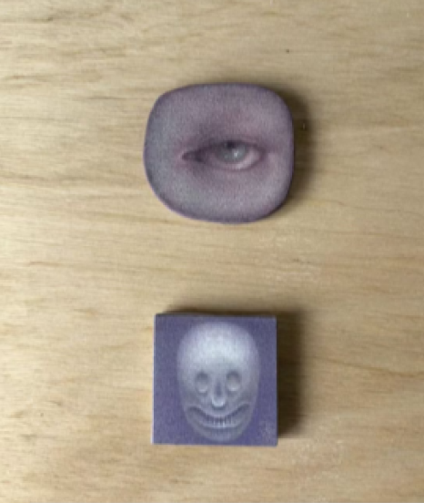
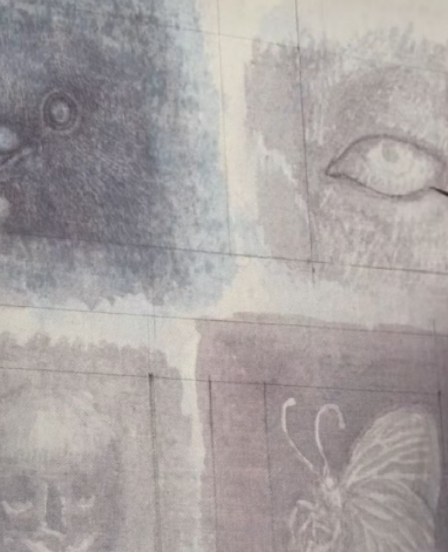
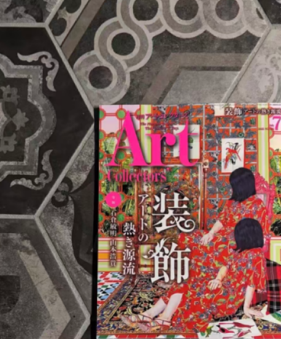
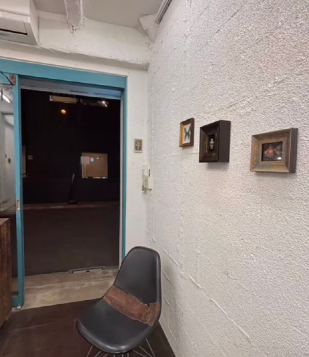
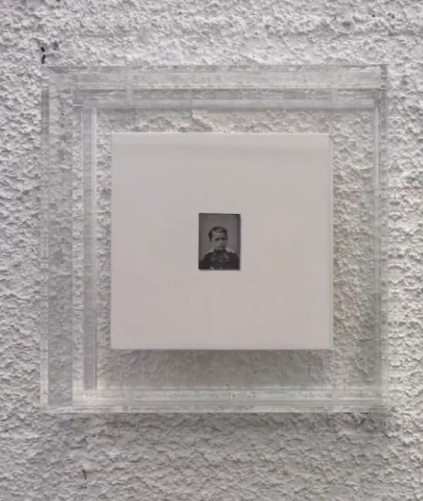
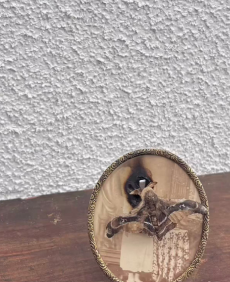
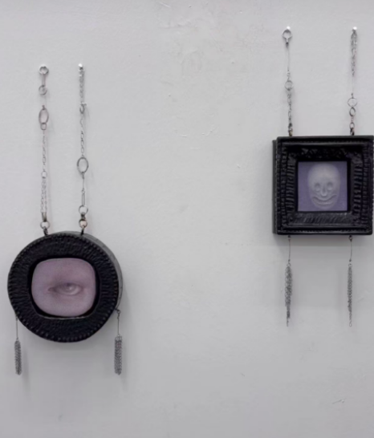
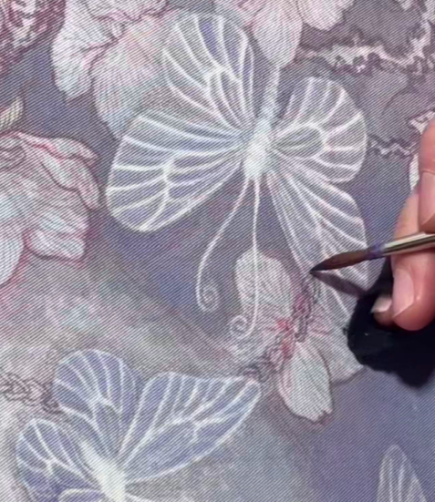

Artist statement Dreams are like strange stories, landscapes, our memory builds unconsciously. draw what comes up from our unconscious, like hidden feelingsrefected in our dreams. Since my studies in France (2007- 2009),and also afer experiencing the earthquake of March 2o in Japan,Istrongly felt,and was madeaware of how the lapanese viewed selflessness,resignation and obedience as virtues. fel that apanese live in the midle of a wide emptiness,locked up inside theirimaginary cocoon,calm and sincere, but quietly desperate. As a Japanese myself, draw imaginary landscapes seen from the inside of this world GOToAtsuko 2009-2010Studied materials and techniques of oil painting at the Tokyo University of the Arts2007-2008studied art at the National School of Fine ArtsinParis2o06 -207Studied materials and techniques of oil painting at the Tokyo University of the ArtsPrice '0-shi2005nternationalArt Prize Taki Fuj 2004PrizeAtaka'2002-2006Studies painting at the Tokyo University of the Arts Born in 1982 in Tokyo







